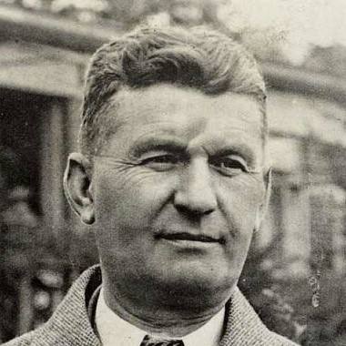

Tomáš Baťa
Zakladatel firmy Baťa
" Kvalita, inovace a cesta ke společnému úspěchu. "
Tomáš Baťa, významný český průmyslník a zakladatel Baťa Company, se narodil v roce 1876. Jeho podnikatelský duch a vize vedly k vytvoření jednoho z nejúspěšnějších obuvnických impérií 20. století. Baťa, původem z malé vesnice Zlínského kraje, začal podnikat v oblasti obuvnictví se svým bratrem Antonínem. Tomáš Baťa byl průkopníkem v mnoha směrech. Byl to on, kdo implementoval revoluční decentralizovaný model výroby, což umožnilo rychlejší reakci na tržní poptávku a zvýšilo flexibilitu výroby. Jeho inovační přístup vedl ke vzniku moderního průmyslu obuvi, kde Baťa Company představila nové technologie a materiály.